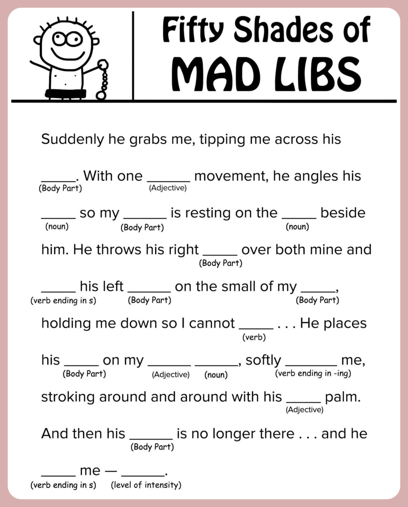
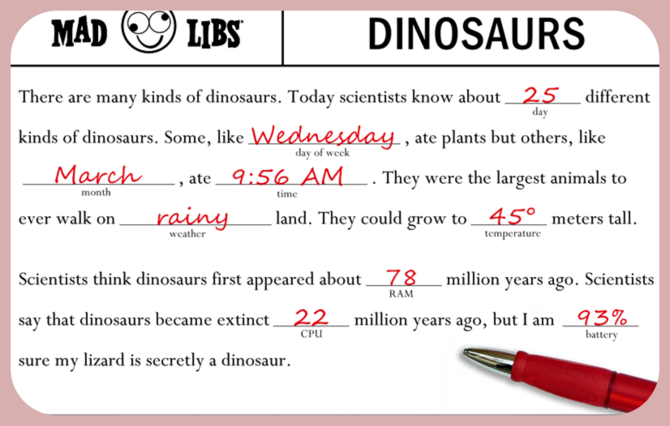
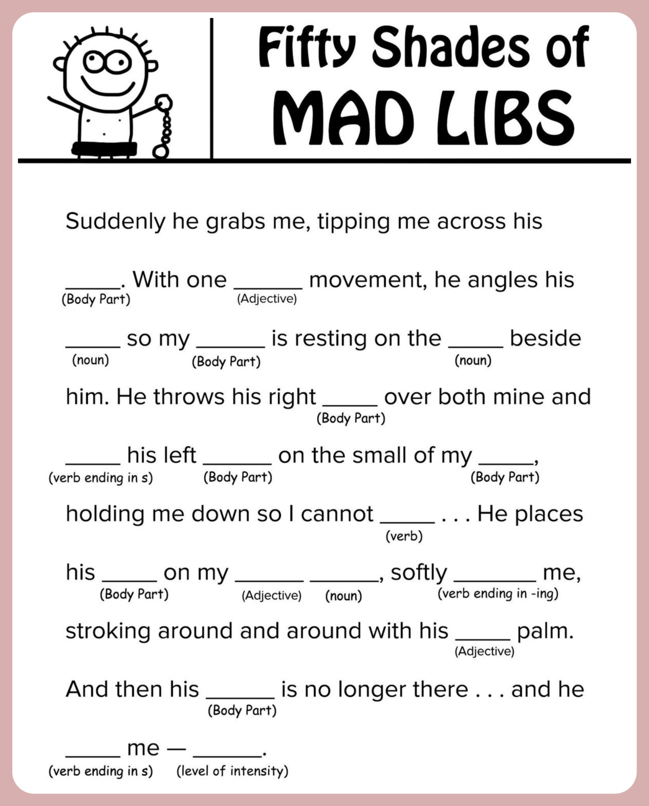
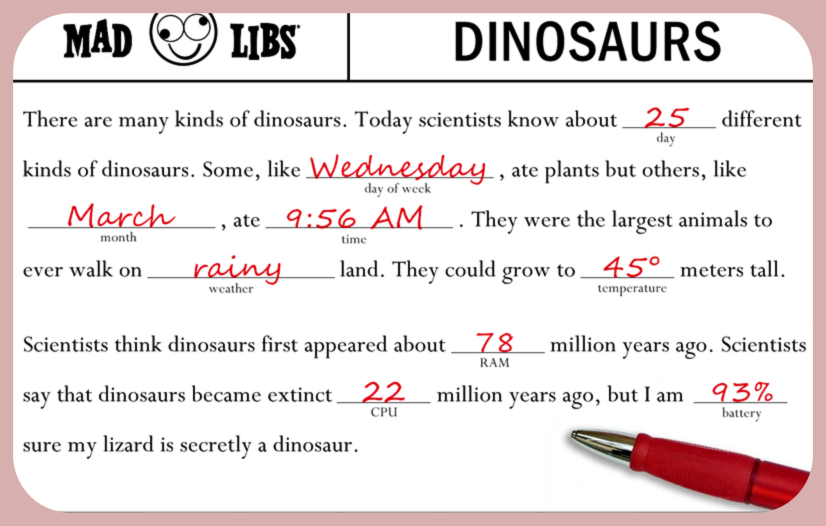

- Go to "PLAY GAME" to find a randomly generated Madlib Text
- Enter what you think is the correct word in the text box
- Submit Enter, see your changes, and enjoy reading!
It will look something like this:
It will look something like this:
It will look something like this:
It will look something like this:
